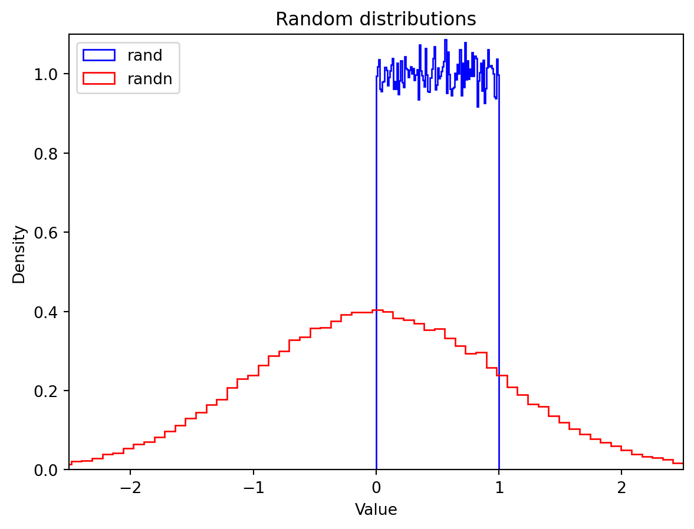
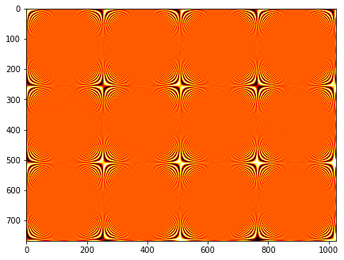

import numpy as np“Numpy 기본”
“numpy 기본 코드 실습(한글)”
- toc:true
- branch: master
- badges: true
- comments: true
- author: Jiho Yeo
- categories: [jupyter, python]
도구 - 넘파이(NumPy)
*넘파이(NumPy)는 파이썬의 과학 컴퓨팅을 위한 기본 라이브러리입니다. 넘파이의 핵심은 강력한 N-차원 배열 객체입니다. 또한 선형 대수, 푸리에(Fourier) 변환, 유사 난수 생성과 같은 유용한 함수들도 제공합니다.”
|
|
⠀⠀⠀
배열 생성
numpy를 임포트해 보죠. 대부분의 사람들이 np로 알리아싱하여 임포트합니다:
np.zeros
zeros 함수는 0으로 채워진 배열을 만듭니다:
np.zeros(5)array([0., 0., 0., 0., 0.])2D 배열(즉, 행렬)을 만들려면 원하는 행과 열의 크기를 튜플로 전달합니다. 예를 들어 다음은 \(3 \times 4\) 크기의 행렬입니다:
np.zeros((3,4))array([[0., 0., 0., 0.],
[0., 0., 0., 0.],
[0., 0., 0., 0.]])용어
- 넘파이에서 각 차원을 축(axis) 이라고 합니다
- 축의 개수를 랭크(rank) 라고 합니다.
- 예를 들어, 위의 \(3 \times 4\) 행렬은 랭크 2인 배열입니다(즉 2차원입니다).
- 첫 번째 축의 길이는 3이고 두 번째 축의 길이는 4입니다.
- 배열의 축 길이를 배열의 크기(shape)라고 합니다.
- 예를 들어, 위 행렬의 크기는
(3, 4)입니다. - 랭크는 크기의 길이와 같습니다.
- 예를 들어, 위 행렬의 크기는
- 배열의 사이즈(size)는 전체 원소의 개수입니다. 축의 길이를 모두 곱해서 구할 수 있습니다(가령, \(3 \times 4=12\)).
a = np.zeros((3,4))
aarray([[0., 0., 0., 0.],
[0., 0., 0., 0.],
[0., 0., 0., 0.]])a.shape(3, 4)a.ndim # len(a.shape)와 같습니다2a.size12N-차원 배열
임의의 랭크 수를 가진 N-차원 배열을 만들 수 있습니다. 예를 들어, 다음은 크기가 (2,3,4)인 3D 배열(랭크=3)입니다:
np.zeros((2,2,5))array([[[0., 0., 0., 0., 0.],
[0., 0., 0., 0., 0.]],
[[0., 0., 0., 0., 0.],
[0., 0., 0., 0., 0.]]])배열 타입
넘파이 배열의 타입은 ndarray입니다:
type(np.zeros((3,4)))numpy.ndarraynp.ones
ndarray를 만들 수 있는 넘파이 함수가 많습니다.
다음은 1로 채워진 \(3 \times 4\) 크기의 행렬입니다:
np.ones((3,4))array([[1., 1., 1., 1.],
[1., 1., 1., 1.],
[1., 1., 1., 1.]])np.full
주어진 값으로 지정된 크기의 배열을 초기화합니다. 다음은 π로 채워진 \(3 \times 4\) 크기의 행렬입니다.
np.full((3,4), np.pi)array([[3.14159265, 3.14159265, 3.14159265, 3.14159265],
[3.14159265, 3.14159265, 3.14159265, 3.14159265],
[3.14159265, 3.14159265, 3.14159265, 3.14159265]])np.empty
초기화되지 않은 \(2 \times 3\) 크기의 배열을 만듭니다(배열의 내용은 예측이 불가능하며 메모리 상황에 따라 달라집니다):
np.empty((2,3))array([[0., 0., 0.],
[0., 0., 0.]])np.array
array 함수는 파이썬 리스트를 사용하여 ndarray를 초기화합니다:
np.array([[1,2,3,4], [10, 20, 30, 40]])array([[ 1, 2, 3, 4],
[10, 20, 30, 40]])np.arange
파이썬의 기본 range 함수와 비슷한 넘파이 arange 함수를 사용하여 ndarray를 만들 수 있습니다:
np.arange(1, 5)array([1, 2, 3, 4])부동 소수도 가능합니다:
np.arange(1.0, 5.0)array([1., 2., 3., 4.])파이썬의 기본 range 함수처럼 건너 뛰는 정도를 지정할 수 있습니다:
np.arange(1, 5, 0.5)array([1. , 1.5, 2. , 2.5, 3. , 3.5, 4. , 4.5])부동 소수를 사용하면 원소의 개수가 일정하지 않을 수 있습니다. 예를 들면 다음과 같습니다:
print(np.arange(0, 5/3, 1/3)) # 부동 소수 오차 때문에, 최댓값은 4/3 또는 5/3이 됩니다.
print(np.arange(0, 5/3, 0.333333333))
print(np.arange(0, 5/3, 0.333333334))[0. 0.33333333 0.66666667 1. 1.33333333 1.66666667]
[0. 0.33333333 0.66666667 1. 1.33333333 1.66666667]
[0. 0.33333333 0.66666667 1. 1.33333334]for loops를 사용하지 않고 전체 array에 대한 연산 수행이 가능합니다.
평균적으로 Numpy-based 알고리즘은 10~100배 정도 속도가 더 빠르고 적은 메모리를 사용합니다.
my_arr = np.arange(1000000)
my_list = list(range(1000000))
%time for _ in range(10): my_arr2 = my_arr * 2
%time for _ in range(10): my_list2 = [x * 2 for x in my_list]Wall time: 77.3 msWall time: 2.31 sFor loop를 돌릴 때의 속도 비교
size = 10
for x in range(size): x ** 2import sys
size = 10
%timeit for x in range(size): x ** 2
# out: 10 loops, best of 3: 136 ms per loop
# avoid this
%timeit for x in np.arange(size): x ** 2
# out: 1 loops, best of 3: 1.16 s per loop
# use this
%timeit np.arange(size) ** 2
# out: 100 loops, best of 3: 19.5 ms per loop5.6 µs ± 307 ns per loop (mean ± std. dev. of 7 runs, 100000 loops each)17.5 µs ± 4.66 µs per loop (mean ± std. dev. of 7 runs, 100000 loops each)3.39 µs ± 330 ns per loop (mean ± std. dev. of 7 runs, 100000 loops each)np.linspace
이런 이유로 부동 소수를 사용할 땐 arange 대신에 linspace 함수를 사용하는 것이 좋습니다. linspace 함수는 지정된 개수만큼 두 값 사이를 나눈 배열을 반환합니다(arange와는 다르게 최댓값이 포함됩니다):
print(np.linspace(0, 5/3, 6))[0. 0.33333333 0.66666667 1. 1.33333333 1.66666667]np.rand와 np.randn
넘파이의 random 모듈에는 ndarray를 랜덤한 값으로 초기화할 수 있는 함수들이 많이 있습니다. 예를 들어, 다음은 (균등 분포인) 0과 1사이의 랜덤한 부동 소수로 \(3 \times 4\) 행렬을 초기화합니다:
np.random.rand(3,4)array([[0.76175278, 0.01726668, 0.24180243, 0.84472395],
[0.17419598, 0.69177976, 0.5537163 , 0.00174141],
[0.80433851, 0.73890899, 0.63295697, 0.04262858]])다음은 평균이 0이고 분산이 1인 일변량 정규 분포(가우시안 분포)에서 샘플링한 랜덤한 부동 소수를 담은 \(3 \times 4\) 행렬입니다:
np.random.randn(3,4)array([[-0.56825546, 1.62473568, 0.60047197, -1.32868762],
[ 2.04461046, -0.27026339, 0.58215598, 1.65684469],
[-1.01567754, 0.49527321, 1.7313467 , 0.84536703]])이 분포의 모양을 알려면 맷플롯립을 사용해 그려보는 것이 좋습니다(더 자세한 것은 맷플롯립 튜토리얼을 참고하세요):
%matplotlib inline
import matplotlib.pyplot as pltplt.hist(np.random.rand(100000), density=True, bins=100, histtype="step", color="blue", label="rand")
plt.hist(np.random.randn(100000), density=True, bins=100, histtype="step", color="red", label="randn")
plt.axis([-2.5, 2.5, 0, 1.1])
plt.legend(loc = "upper left")
plt.title("Random distributions")
plt.xlabel("Value")
plt.ylabel("Density")
plt.show()
np.fromfunction
함수를 사용하여 ndarray를 초기화할 수도 있습니다:
def my_function(z, y, x):
return x + 10 * y + 100 * z
np.fromfunction(my_function, (3, 2, 10))array([[[ 0., 1., 2., 3., 4., 5., 6., 7., 8., 9.],
[ 10., 11., 12., 13., 14., 15., 16., 17., 18., 19.]],
[[100., 101., 102., 103., 104., 105., 106., 107., 108., 109.],
[110., 111., 112., 113., 114., 115., 116., 117., 118., 119.]],
[[200., 201., 202., 203., 204., 205., 206., 207., 208., 209.],
[210., 211., 212., 213., 214., 215., 216., 217., 218., 219.]]])넘파이는 먼저 크기가 (3, 2, 10)인 세 개의 ndarray(차원마다 하나씩)를 만듭니다. 각 배열은 축을 따라 좌표 값과 같은 값을 가집니다. 예를 들어, z 축에 있는 배열의 모든 원소는 z-축의 값과 같습니다:
[[[ 0. 0. 0. 0. 0. 0. 0. 0. 0. 0.]
[ 0. 0. 0. 0. 0. 0. 0. 0. 0. 0.]]
[[ 1. 1. 1. 1. 1. 1. 1. 1. 1. 1.]
[ 1. 1. 1. 1. 1. 1. 1. 1. 1. 1.]]
[[ 2. 2. 2. 2. 2. 2. 2. 2. 2. 2.]
[ 2. 2. 2. 2. 2. 2. 2. 2. 2. 2.]]]위의 식 x + 10 * y + 100 * z에서 x, y, z는 사실 ndarray입니다(배열의 산술 연산에 대해서는 아래에서 설명합니다). 중요한 점은 함수 my_function이 원소마다 호출되는 것이 아니고 딱 한 번 호출된다는 점입니다. 그래서 매우 효율적으로 초기화할 수 있습니다.
배열 데이터
dtype
넘파이의 ndarray는 모든 원소가 동일한 타입(보통 숫자)을 가지기 때문에 효율적입니다. dtype 속성으로 쉽게 데이터 타입을 확인할 수 있습니다:
c = np.arange(1, 5)
print(c.dtype, c)int32 [1 2 3 4]c = np.arange(1.0, 5.0)
print(c.dtype, c)float64 [1. 2. 3. 4.]넘파이가 데이터 타입을 결정하도록 내버려 두는 대신 dtype 매개변수를 사용해서 배열을 만들 때 명시적으로 지정할 수 있습니다:
d = np.arange(1, 5, dtype=np.complex64)
print(d.dtype, d)complex64 [1.+0.j 2.+0.j 3.+0.j 4.+0.j]가능한 데이터 타입은 int8, int16, int32, int64, uint8|16|32|64, float16|32|64, complex64|128가 있습니다. 전체 리스트는 온라인 문서를 참고하세요.
itemsize
itemsize 속성은 각 아이템의 크기(바이트)를 반환합니다:
e = np.arange(1, 5, dtype=np.complex64)
e.itemsize8data 버퍼
배열의 데이터는 1차원 바이트 버퍼로 메모리에 저장됩니다. data 속성을 사용해 참조할 수 있습니다(사용할 일은 거의 없겠지만요).
f = np.array([[1,2],[1000, 2000]], dtype=np.int32)
f.data<memory at 0x000001B19C794040>파이썬 2에서는 f.data가 버퍼이고 파이썬 3에서는 memoryview입니다.
if (hasattr(f.data, "tobytes")):
data_bytes = f.data.tobytes() # python 3
else:
data_bytes = memoryview(f.data).tobytes() # python 2
data_bytesb'\x01\x00\x00\x00\x02\x00\x00\x00\xe8\x03\x00\x00\xd0\x07\x00\x00'여러 개의 ndarray가 데이터 버퍼를 공유할 수 있습니다. 하나를 수정하면 다른 것도 바뀝니다. 잠시 후에 예를 살펴 보겠습니다.
배열 크기 변경
자신을 변경
ndarray의 shape 속성을 지정하면 간단히 크기를 바꿀 수 있습니다. 배열의 원소 개수는 동일하게 유지됩니다.
g = np.arange(24)
print(g)
print("랭크:", g.ndim)[ 0 1 2 3 4 5 6 7 8 9 10 11 12 13 14 15 16 17 18 19 20 21 22 23]
랭크: 1g.shape = (6, 4)
print(g)
print("랭크:", g.ndim)[[ 0 1 2 3]
[ 4 5 6 7]
[ 8 9 10 11]
[12 13 14 15]
[16 17 18 19]
[20 21 22 23]]
랭크: 2g.shape = (2, 3, 4)
print(g)
print("랭크:", g.ndim)[[[ 0 1 2 3]
[ 4 5 6 7]
[ 8 9 10 11]]
[[12 13 14 15]
[16 17 18 19]
[20 21 22 23]]]
랭크: 3reshape
reshape 함수는 동일한 데이터를 가리키는 새로운 ndarray 객체를 반환합니다. 한 배열을 수정하면 다른 것도 함께 바뀝니다.
g2 = g.reshape(4,6)
print(g2)
print("랭크:", g2.ndim)[[ 0 1 2 3 4 5]
[ 6 7 8 9 10 11]
[12 13 14 15 16 17]
[18 19 20 21 22 23]]
랭크: 2g[0,0,0] = 10
g2array([[10, 1, 2, 3, 4, 5],
[ 6, 7, 8, 9, 10, 11],
[12, 13, 14, 15, 16, 17],
[18, 19, 20, 21, 22, 23]])행 1, 열 2의 원소를 999로 설정합니다(인덱싱 방식은 아래를 참고하세요).
g2[1, 2] = 999
g2array([[ 10, 1, 2, 3, 4, 5],
[ 6, 7, 999, 9, 10, 11],
[ 12, 13, 14, 15, 16, 17],
[ 18, 19, 20, 21, 22, 23]])이에 상응하는 g의 원소도 수정됩니다.
garray([[[ 10, 1, 2, 3],
[ 4, 5, 6, 7],
[999, 9, 10, 11]],
[[ 12, 13, 14, 15],
[ 16, 17, 18, 19],
[ 20, 21, 22, 23]]])완전히 다른 공간에 값만 같게 복사를 하고 싶다면 copy를 사용.
이렇게 할 경우 두 객체는 독립적인 객체로 존재함
g2 = g.copy()
g2array([[[ 10, 1, 2, 3],
[ 4, 5, 6, 7],
[999, 9, 10, 11]],
[[ 12, 13, 14, 15],
[ 16, 17, 18, 19],
[ 20, 21, 22, 23]]])ravel
마지막으로 ravel 함수는 동일한 데이터를 가리키는 새로운 1차원 ndarray를 반환합니다:
g.ravel()array([ 10, 1, 2, 3, 4, 5, 6, 7, 999, 9, 10, 11, 12,
13, 14, 15, 16, 17, 18, 19, 20, 21, 22, 23])산술 연산
일반적인 산술 연산자(+, -, *, /, //, ** 등)는 모두 ndarray와 사용할 수 있습니다. 이 연산자는 원소별로 적용됩니다:
a = np.array([14, 23, 32, 41])
b = np.array([5, 4, 3, 2])
print("a + b =", a + b)
print("a - b =", a - b)
print("a * b =", a * b)
print("a / b =", a / b)
print("a // b =", a // b) # 몫
print("a % b =", a % b) # 나머지
print("a ** b =", a ** b)a + b = [19 27 35 43]
a - b = [ 9 19 29 39]
a * b = [70 92 96 82]
a / b = [ 2.8 5.75 10.66666667 20.5 ]
a // b = [ 2 5 10 20]
a % b = [4 3 2 1]
a ** b = [537824 279841 32768 1681]5 ** 3125여기 곱셈은 행렬 곱셈이 아닙니다. 행렬 연산은 아래에서 설명합니다.
배열의 크기는 같아야 합니다. 그렇지 않으면 넘파이가 브로드캐스팅 규칙을 적용합니다.
브로드캐스팅
일반적으로 넘파이는 동일한 크기의 배열을 기대합니다. 그렇지 않은 상황에는 브로드캐시틍 규칙을 적용합니다:
규칙 1
배열의 랭크가 동일하지 않으면 랭크가 맞을 때까지 랭크가 작은 배열 앞에 1을 추가합니다.
h = np.arange(5).reshape(1, 1, 5)
harray([[[0, 1, 2, 3, 4]]])여기에 (1,1,5) 크기의 3D 배열에 (5,) 크기의 1D 배열을 더해 보죠. 브로드캐스팅의 규칙 1이 적용됩니다!
h + [10, 20, 30, 40, 50] # 다음과 동일합니다: h + [[[10, 20, 30, 40, 50]]]array([[[10, 21, 32, 43, 54]]])규칙 2
특정 차원이 1인 배열은 그 차원에서 크기가 가장 큰 배열의 크기에 맞춰 동작합니다. 배열의 원소가 차원을 따라 반복됩니다.
k = np.arange(6).reshape(2, 3)
karray([[0, 1, 2],
[3, 4, 5]])(2,3) 크기의 2D ndarray에 (2,1) 크기의 2D 배열을 더해 보죠. 넘파이는 브로드캐스팅 규칙 2를 적용합니다:
k + [[100], [200]] # 다음과 같습니다: k + [[100, 100, 100], [200, 200, 200]]array([[100, 101, 102],
[203, 204, 205]])규칙 1과 2를 합치면 다음과 같이 동작합니다:
(2,3) 크기의 ndarray에 (3,) 크기의 ndarray 더하기
karray([[0, 1, 2],
[3, 4, 5]])k + [100, 200, 300] # 규칙 1 적용: [[100, 200, 300]], 규칙 2 적용: [[100, 200, 300], [100, 200, 300]]array([[100, 201, 302],
[103, 204, 305]])test = np.array([100, 200, 300])
test.shape
testarray([100, 200, 300])# step 1
test = test.reshape(1,3)
testarray([[100, 200, 300]])# step 2
np.vstack((test,test))array([[100, 200, 300],
[100, 200, 300]])# step 3
np.concatenate((test,test), axis=0)array([[100, 200, 300],
[100, 200, 300]])또 매우 간단히 다음처럼 해도 됩니다:
k + 1000 # 다음과 같습니다: k + [[1000, 1000, 1000], [1000, 1000, 1000]]array([[1000, 1001, 1002],
[1003, 1004, 1005]])규칙 3
규칙 1 & 2을 적용했을 때 모든 배열의 크기가 맞아야 합니다.
karray([[0, 1, 2],
[3, 4, 5]])try:
k + [33, 44]
except ValueError as e:
print(e)operands could not be broadcast together with shapes (2,3) (2,) 브로드캐스팅 규칙은 산술 연산 뿐만 아니라 넘파이 연산에서 많이 사용됩니다. 아래에서 더 보도록 하죠. 브로드캐스팅에 관한 더 자세한 정보는 온라인 문서를 참고하세요.
a = np.array([[0.0],[10.0],[20.0],[30.0]])
aarray([[ 0.],
[10.],
[20.],
[30.]])a = np.array([0.0, 10.0, 20.0, 30.0])
b = np.array([1.0, 2.0, 3.0])
a[:, np.newaxis] + barray([[ 1., 2., 3.],
[11., 12., 13.],
[21., 22., 23.],
[31., 32., 33.]])업캐스팅
dtype이 다른 배열을 합칠 때 넘파이는 (실제 값에 상관없이) 모든 값을 다룰 수 있는 타입으로 업캐스팅합니다.
k1 = np.arange(0, 5, dtype=np.uint8)
print(k1.dtype, k1)uint8 [0 1 2 3 4]k2 = k1 + np.array([5, 6, 7, 8, 9], dtype=np.int8)
print(k2.dtype, k2)int16 [ 5 7 9 11 13]모든 int8과 uint8 값(-128에서 255까지)을 표현하기 위해 int16이 필요합니다. 이 코드에서는 uint8이면 충분하지만 업캐스팅되었습니다.
k3 = k1 + 1.5
print(k3.dtype, k3)float64 [1.5 2.5 3.5 4.5 5.5]조건 연산자
조건 연산자도 원소별로 적용됩니다:
m = np.array([20, -5, 30, 40])
m < [15, 16, 35, 36]array([False, True, True, False])브로드캐스팅을 사용합니다:
m < 25 # m < [25, 25, 25, 25] 와 동일array([ True, True, False, False])불리언 인덱싱과 함께 사용하면 아주 유용합니다(아래에서 설명하겠습니다).
m[m < 25]array([20, -5])수학 함수와 통계 함수
ndarray에서 사용할 수 있는 수학 함수와 통계 함수가 많습니다.
ndarray 메서드
일부 함수는 ndarray 메서드로 제공됩니다. 예를 들면:
a = np.array([[-2.5, 3.1, 7], [10, 11, 12]])
print(a)
print("평균 =", a.mean()) # 축에 따라서 평균 구하고 싶으면 axis=0 1 2[[-2.5 3.1 7. ]
[10. 11. 12. ]]
평균 = 6.766666666666667이 명령은 크기에 상관없이 ndarray에 있는 모든 원소의 평균을 계산합니다.
다음은 유용한 ndarray 메서드입니다:
for func in (a.min, a.max, a.sum, a.prod, a.std, a.var):
print(func.__name__, "=", func())min = -2.5
max = 12.0
sum = 40.6
prod = -71610.0
std = 5.084835843520964
var = 25.855555555555554이 함수들은 선택적으로 매개변수 axis를 사용합니다. 지정된 축을 따라 원소에 연산을 적용하는데 사용합니다. 예를 들면:
c = np.arange(24).reshape(2,3,4)
carray([[[ 0, 1, 2, 3],
[ 4, 5, 6, 7],
[ 8, 9, 10, 11]],
[[12, 13, 14, 15],
[16, 17, 18, 19],
[20, 21, 22, 23]]])c.sum(axis=0) # 첫 번째 축을 따라 더함, 결과는 3x4 배열array([[12, 14, 16, 18],
[20, 22, 24, 26],
[28, 30, 32, 34]])c.sum(axis=1) # 두 번째 축을 따라 더함, 결과는 2x4 배열array([[12, 15, 18, 21],
[48, 51, 54, 57]])c.sum(axis=2) # 세 번째 축을 따라 더함, 결과는 2x3 배열array([[ 6, 22, 38],
[54, 70, 86]])여러 축에 대해서 더할 수도 있습니다:
carray([[[ 0, 1, 2, 3],
[ 4, 5, 6, 7],
[ 8, 9, 10, 11]],
[[12, 13, 14, 15],
[16, 17, 18, 19],
[20, 21, 22, 23]]])c.sum(axis=(0,2)) # 첫 번째 축과 세 번째 축을 따라 더함, 결과는 (3,) 배열array([ 60, 92, 124])0+1+2+3 + 12+13+14+15, 4+5+6+7 + 16+17+18+19, 8+9+10+11 + 20+21+22+23(60, 92, 124)일반 함수
넘파이는 일반 함수(universal function) 또는 ufunc라고 부르는 원소별 함수를 제공합니다. 예를 들면 square 함수는 원본 ndarray를 복사하여 각 원소를 제곱한 새로운 ndarray 객체를 반환합니다:
a = np.array([[-2.5, 3.1, 7], [10, 11, 12]])
np.square(a)array([[ 6.25, 9.61, 49. ],
[100. , 121. , 144. ]])다음은 유용한 단항 일반 함수들입니다:
print("원본 ndarray")
print(a)
for func in (np.abs, np.sqrt, np.exp, np.log, np.sign, np.ceil, np.modf, np.isnan, np.cos):
print("\n", func.__name__)
print(func(a))원본 ndarray
[[-2.5 3.1 7. ]
[10. 11. 12. ]]
absolute
[[ 2.5 3.1 7. ]
[10. 11. 12. ]]
sqrt
[[ nan 1.76068169 2.64575131]
[3.16227766 3.31662479 3.46410162]]
exp
[[8.20849986e-02 2.21979513e+01 1.09663316e+03]
[2.20264658e+04 5.98741417e+04 1.62754791e+05]]
log
[[ nan 1.13140211 1.94591015]
[2.30258509 2.39789527 2.48490665]]
sign
[[-1. 1. 1.]
[ 1. 1. 1.]]
ceil
[[-2. 4. 7.]
[10. 11. 12.]]
modf
(array([[-0.5, 0.1, 0. ],
[ 0. , 0. , 0. ]]), array([[-2., 3., 7.],
[10., 11., 12.]]))
isnan
[[False False False]
[False False False]]
cos
[[-0.80114362 -0.99913515 0.75390225]
[-0.83907153 0.0044257 0.84385396]]C:\Users\Public\Documents\ESTsoft\CreatorTemp\ipykernel_5948\4103705789.py:5: RuntimeWarning:
invalid value encountered in sqrt
C:\Users\Public\Documents\ESTsoft\CreatorTemp\ipykernel_5948\4103705789.py:5: RuntimeWarning:
invalid value encountered in log
이항 일반 함수
두 개의 ndarray에 원소별로 적용되는 이항 함수도 많습니다. 두 배열이 동일한 크기가 아니면 브로드캐스팅 규칙이 적용됩니다:
a = np.array([1, -2, 3, 4])
b = np.array([2, 8, -1, 7])
np.add(a, b) # a + b 와 동일array([ 3, 6, 2, 11])np.greater(a, b) # a > b 와 동일array([False, False, True, False])np.maximum(a, b)array([2, 8, 3, 7])np.copysign(a, b)array([ 1., 2., -3., 4.])배열 인덱싱 ★
1차원 배열
1차원 넘파이 배열은 보통의 파이썬 배열과 비슷하게 사용할 수 있습니다:
a = np.array([1, 5, 3, 19, 13, 7, 3])
a[3]19a[2:5]array([ 3, 19, 13])a[2:-1]array([ 3, 19, 13, 7])a[:2]array([1, 5])a[2::2]array([ 3, 13, 3])a[::-1]array([ 3, 7, 13, 19, 3, 5, 1])물론 원소를 수정할 수 있죠:
a[3]=999
aarray([ 1, 5, 3, 999, 13, 7, 3])슬라이싱을 사용해 ndarray를 수정할 수 있습니다:
a[2:5] = [997, 998, 999]
aarray([ 1, 5, 997, 998, 999, 7, 3])보통의 파이썬 배열과 차이점
보통의 파이썬 배열과 대조적으로 ndarray 슬라이싱에 하나의 값을 할당하면 슬라이싱 전체에 복사됩니다. 위에서 언급한 브로드캐스팅 덕택입니다.
a = np.array([1, 5, 3, 19, 13, 7, 3])
aarray([ 1, 5, 3, 19, 13, 7, 3])a[2:5] = -1
aarray([ 1, 5, -1, -1, -1, 7, 3])List는 브로드캐스팅으로 할당이 안됨
b = [1, 5, 3, 19, 13, 7, 3]
#b[2:5] = -1또한 이런 식으로 ndarray 크기를 늘리거나 줄일 수 없습니다:
try:
a[2:5] = [1,2,3,4,5,6] # 너무 길어요
except ValueError as e:
print(e)could not broadcast input array from shape (6,) into shape (3,)원소를 삭제할 수도 없습니다:
try:
del a[2:5]
except ValueError as e:
print(e)cannot delete array elementsList에서는 삭제가 가능
b = [1, 5, 3, 19, 13, 7, 3]
del b[2:5]
b[1, 5, 7, 3]중요한 점은 ndarray의 슬라이싱은 같은 데이터 버퍼를 바라보는 뷰(view)입니다. 슬라이싱된 객체를 수정하면 실제 원본 ndarray가 수정됩니다!
a_slice = a[2:6]
a_slice[1] = 1000
a # 원본 배열이 수정됩니다!array([ 1, 5, -1, 1000, -1, 7, 3])a[3] = 2000
a_slice # 비슷하게 원본 배열을 수정하면 슬라이싱 객체에도 반영됩니다!array([ -1, 2000, -1, 7])데이터를 복사하려면 copy 메서드를 사용해야 합니다:
another_slice = a[2:6].copy()
another_slice[1] = 3000
a # 원본 배열이 수정되지 않습니다.array([ 1, 5, -1, 2000, -1, 7, 3])a[3] = 4000
another_slice # 마찬가지로 원본 배열을 수정해도 복사된 배열은 바뀌지 않습니다.array([ -1, 3000, -1, 7])다차원 배열
다차원 배열은 비슷한 방식으로 각 축을 따라 인덱싱 또는 슬라이싱해서 사용합니다. 콤마로 구분합니다:
b = np.arange(48).reshape(4, 12)
barray([[ 0, 1, 2, 3, 4, 5, 6, 7, 8, 9, 10, 11],
[12, 13, 14, 15, 16, 17, 18, 19, 20, 21, 22, 23],
[24, 25, 26, 27, 28, 29, 30, 31, 32, 33, 34, 35],
[36, 37, 38, 39, 40, 41, 42, 43, 44, 45, 46, 47]])b[1, 2] # 행 1, 열 214b[1, :] # 행 1, 모든 열array([12, 13, 14, 15, 16, 17, 18, 19, 20, 21, 22, 23])b[:, 1] # 모든 행, 열 1array([ 1, 13, 25, 37])주의: 다음 두 표현에는 미묘한 차이가 있습니다:
b[1, :]array([12, 13, 14, 15, 16, 17, 18, 19, 20, 21, 22, 23])b[1, :].shape(12,)b[1:2, :]array([[12, 13, 14, 15, 16, 17, 18, 19, 20, 21, 22, 23]])b[1:2, :].shape(1, 12)첫 번째 표현식은 (12,) 크기인 1D 배열로 행이 하나입니다. 두 번째는 (1, 12) 크기인 2D 배열로 같은 행을 반환합니다.
팬시 인덱싱(Fancy indexing)
관심 대상의 인덱스 리스트를 지정할 수도 있습니다. 이를 팬시 인덱싱이라고 부릅니다.
barray([[ 0, 1, 2, 3, 4, 5, 6, 7, 8, 9, 10, 11],
[12, 13, 14, 15, 16, 17, 18, 19, 20, 21, 22, 23],
[24, 25, 26, 27, 28, 29, 30, 31, 32, 33, 34, 35],
[36, 37, 38, 39, 40, 41, 42, 43, 44, 45, 46, 47]])b[(0,2), 2:5] # 행 0과 2, 열 2에서 4(5-1)까지array([[ 2, 3, 4],
[26, 27, 28]])b[:, (-1, 2, -1)] # 모든 행, 열 -1 (마지막), 2와 -1 (다시 반대 방향으로)array([[11, 2, 11],
[23, 14, 23],
[35, 26, 35],
[47, 38, 47]])b[(2,3), 0:2] # b[2:,0:2]array([[24, 25],
[36, 37]])여러 개의 인덱스 리스트를 지정하면 인덱스에 맞는 값이 포함된 1D ndarray를 반환됩니다.
barray([[ 0, 1, 2, 3, 4, 5, 6, 7, 8, 9, 10, 11],
[12, 13, 14, 15, 16, 17, 18, 19, 20, 21, 22, 23],
[24, 25, 26, 27, 28, 29, 30, 31, 32, 33, 34, 35],
[36, 37, 38, 39, 40, 41, 42, 43, 44, 45, 46, 47]])b[(-1, 2, -1, 2), (5, 9, 1, 9)] # returns a 1D array with b[-1, 5], b[2, 9], b[-1, 1] and b[2, 9] (again)array([41, 33, 37, 33])Quiz. 아래의 array를 사용해서 다음 퀴즈를 풀어봅시다.
import numpy as np
array_2d = np.array([[5, 10, 15],
[20, 25, 30],
[35, 40, 45]]) # np.arange(5,50,5).reshape(3,3)
array_2darray([[ 5, 10, 15],
[20, 25, 30],
[35, 40, 45]])- 2차원 배열 ’array_2d’에서 첫 번째 행(row)의 모든 요소를 선택해 보세요.
>힌트: 인덱싱을 사용하여 첫 번째 행을 선택할 수 있습니다.
array_2d[0,:]array([ 5, 10, 15])- 2차원 배열 ’array_2d’에서 두 번째 열(column)의 모든 요소를 선택해 보세요.
>힌트: 인덱싱과 슬라이싱을 사용하여 두 번째 열을 선택할 수 있습니다.
array_2d[:,1]array([10, 25, 40])- 2차원 배열 ’array_2d’에서 다음 요소들을 선택해 보세요: 25, 30, 40, 45
>힌트: 팬시 인덱싱(fancy indexing)을 사용하여 여러 요소를 한 번에 선택할 수 있습니다.
array_2d[(1,2),1:3]array([[25, 30],
[40, 45]])고차원
고차원에서도 동일한 방식이 적용됩니다. 몇 가지 예를 살펴 보겠습니다:
c = b.reshape(4,2,6)
carray([[[ 0, 1, 2, 3, 4, 5],
[ 6, 7, 8, 9, 10, 11]],
[[12, 13, 14, 15, 16, 17],
[18, 19, 20, 21, 22, 23]],
[[24, 25, 26, 27, 28, 29],
[30, 31, 32, 33, 34, 35]],
[[36, 37, 38, 39, 40, 41],
[42, 43, 44, 45, 46, 47]]])c[2, 1, 4] # 행렬 2, 행 1, 열 434c[2, :, 3] # 행렬 2, 모든 행, 열 3array([27, 33])어떤 축에 대한 인덱스를 지정하지 않으면 이 축의 모든 원소가 반환됩니다:
c[2, 1] # 행렬 2, 행 1, 모든 열이 반환됩니다. c[2, 1, :]와 동일합니다.array([30, 31, 32, 33, 34, 35])생략 부호 (...)
생략 부호(...)를 쓰면 모든 지정하지 않은 축의 원소를 포함합니다.
c[2, ...] # 행렬 2, 모든 행, 모든 열. c[2, :, :]와 동일array([[24, 25, 26, 27, 28, 29],
[30, 31, 32, 33, 34, 35]])c[2, 1, ...] # 행렬 2, 행 1, 모든 열. c[2, 1, :]와 동일array([30, 31, 32, 33, 34, 35])c[2, ..., 3] # 행렬 2, 모든 행, 열 3. c[2, :, 3]와 동일array([27, 33])c[..., 3] # 모든 행렬, 모든 행, 열 3. c[:, :, 3]와 동일array([[ 3, 9],
[15, 21],
[27, 33],
[39, 45]])불리언 인덱싱
불리언 값을 가진 ndarray를 사용해 축의 인덱스를 지정할 수 있습니다.
b = np.arange(48).reshape(4, 12)
barray([[ 0, 1, 2, 3, 4, 5, 6, 7, 8, 9, 10, 11],
[12, 13, 14, 15, 16, 17, 18, 19, 20, 21, 22, 23],
[24, 25, 26, 27, 28, 29, 30, 31, 32, 33, 34, 35],
[36, 37, 38, 39, 40, 41, 42, 43, 44, 45, 46, 47]])rows_on = np.array([True, False, True, False])
b[rows_on, :] # 행 0과 2, 모든 열. b[(0, 2), :]와 동일array([[ 0, 1, 2, 3, 4, 5, 6, 7, 8, 9, 10, 11],
[24, 25, 26, 27, 28, 29, 30, 31, 32, 33, 34, 35]])cols_on = np.array([False, True, False] * 4)
b[:, cols_on] # 모든 행, 열 1, 4, 7, 10array([[ 1, 4, 7, 10],
[13, 16, 19, 22],
[25, 28, 31, 34],
[37, 40, 43, 46]])np.ix_
여러 축에 걸쳐서는 불리언 인덱싱을 사용할 수 없고 ix_ 함수를 사용합니다:
b[np.ix_((0,2),(1,4,7,10))]array([[ 1, 4, 7, 10],
[25, 28, 31, 34]])b[np.ix_(rows_on, cols_on)]array([[ 1, 4, 7, 10],
[25, 28, 31, 34]])np.ix_(rows_on, cols_on)(array([[0],
[2]], dtype=int64),
array([[ 1, 4, 7, 10]], dtype=int64))ndarray와 같은 크기의 불리언 배열을 사용하면 해당 위치가 True인 모든 원소를 담은 1D 배열이 반환됩니다. 일반적으로 조건 연산자와 함께 사용합니다:
b.shape(4, 12)b[b % 3 == 1] # 나머지array([ 1, 4, 7, 10, 13, 16, 19, 22, 25, 28, 31, 34, 37, 40, 43, 46])반복
ndarray를 반복하는 것은 일반적인 파이썬 배열을 반복한는 것과 매우 유사합니다. 다차원 배열을 반복하면 첫 번째 축에 대해서 수행됩니다.
c = np.arange(24).reshape(2, 3, 4) # 3D 배열 (두 개의 3x4 행렬로 구성됨)
carray([[[ 0, 1, 2, 3],
[ 4, 5, 6, 7],
[ 8, 9, 10, 11]],
[[12, 13, 14, 15],
[16, 17, 18, 19],
[20, 21, 22, 23]]])for m in c:
print("아이템:")
print(m)아이템:
[[ 0 1 2 3]
[ 4 5 6 7]
[ 8 9 10 11]]
아이템:
[[12 13 14 15]
[16 17 18 19]
[20 21 22 23]]for i in range(len(c)): # len(c) == c.shape[0]
print("아이템:")
print(c[i]) # c[i,:,:]아이템:
[[ 0 1 2 3]
[ 4 5 6 7]
[ 8 9 10 11]]
아이템:
[[12 13 14 15]
[16 17 18 19]
[20 21 22 23]]ndarray에 있는 모든 원소를 반복하려면 flat 속성을 사용합니다:
for i in c.flat:
print("아이템:", i)아이템: 0
아이템: 1
아이템: 2
아이템: 3
아이템: 4
아이템: 5
아이템: 6
아이템: 7
아이템: 8
아이템: 9
아이템: 10
아이템: 11
아이템: 12
아이템: 13
아이템: 14
아이템: 15
아이템: 16
아이템: 17
아이템: 18
아이템: 19
아이템: 20
아이템: 21
아이템: 22
아이템: 23배열 쌓기
종종 다른 배열을 쌓아야 할 때가 있습니다. 넘파이는 이를 위해 몇 개의 함수를 제공합니다. 먼저 배열 몇 개를 만들어 보죠.
q1 = np.full((3,4), 1.0)
q1array([[1., 1., 1., 1.],
[1., 1., 1., 1.],
[1., 1., 1., 1.]])q2 = np.full((4,4), 2.0)
q2array([[2., 2., 2., 2.],
[2., 2., 2., 2.],
[2., 2., 2., 2.],
[2., 2., 2., 2.]])q3 = np.full((3,4), 3.0)
q3array([[3., 3., 3., 3.],
[3., 3., 3., 3.],
[3., 3., 3., 3.]])vstack
vstack 함수를 사용하여 수직으로 쌓아보죠:
q4 = np.vstack((q1, q2, q3))
q4array([[1., 1., 1., 1.],
[1., 1., 1., 1.],
[1., 1., 1., 1.],
[2., 2., 2., 2.],
[2., 2., 2., 2.],
[2., 2., 2., 2.],
[2., 2., 2., 2.],
[3., 3., 3., 3.],
[3., 3., 3., 3.],
[3., 3., 3., 3.]])q4.shape(10, 4)q1, q2, q3가 모두 같은 크기이므로 가능합니다(수직으로 쌓기 때문에 수직 축은 크기가 달라도 됩니다).
hstack
hstack을 사용해 수평으로도 쌓을 수 있습니다:
q5 = np.hstack((q1, q3))
q5array([[1., 1., 1., 1., 3., 3., 3., 3.],
[1., 1., 1., 1., 3., 3., 3., 3.],
[1., 1., 1., 1., 3., 3., 3., 3.]])q5.shape(3, 8)q1과 q3가 모두 3개의 행을 가지고 있기 때문에 가능합니다. q2는 4개의 행을 가지고 있기 때문에 q1, q3와 수평으로 쌓을 수 없습니다:
try:
q5 = np.hstack((q1, q2, q3))
except ValueError as e:
print(e)all the input array dimensions for the concatenation axis must match exactly, but along dimension 0, the array at index 0 has size 3 and the array at index 1 has size 4concatenate
concatenate 함수는 지정한 축으로도 배열을 쌓습니다.
q7 = np.concatenate((q1, q2, q3), axis=0) # vstack과 동일
q7array([[1., 1., 1., 1.],
[1., 1., 1., 1.],
[1., 1., 1., 1.],
[2., 2., 2., 2.],
[2., 2., 2., 2.],
[2., 2., 2., 2.],
[2., 2., 2., 2.],
[3., 3., 3., 3.],
[3., 3., 3., 3.],
[3., 3., 3., 3.]])q7.shape(10, 4)예상했겠지만 hstack은 axis=1으로 concatenate를 호출하는 것과 같습니다.
q5 = np.hstack((q1, q3))
q5array([[1., 1., 1., 1., 3., 3., 3., 3.],
[1., 1., 1., 1., 3., 3., 3., 3.],
[1., 1., 1., 1., 3., 3., 3., 3.]])np.concatenate((q1,q3), axis=1)array([[1., 1., 1., 1., 3., 3., 3., 3.],
[1., 1., 1., 1., 3., 3., 3., 3.],
[1., 1., 1., 1., 3., 3., 3., 3.]])stack
stack 함수는 새로운 축을 따라 배열을 쌓습니다. 모든 배열은 같은 크기를 가져야 합니다.
q1.shape, q3.shape((3, 4), (3, 4))q8 = np.stack((q1, q3))
q8array([[[1., 1., 1., 1.],
[1., 1., 1., 1.],
[1., 1., 1., 1.]],
[[3., 3., 3., 3.],
[3., 3., 3., 3.],
[3., 3., 3., 3.]]])q8.shape(2, 3, 4)배열 분할
분할은 쌓기의 반대입니다. 예를 들어 vsplit 함수는 행렬을 수직으로 분할합니다.
먼저 6x4 행렬을 만들어 보죠:
r = np.arange(24).reshape(6,4)
rarray([[ 0, 1, 2, 3],
[ 4, 5, 6, 7],
[ 8, 9, 10, 11],
[12, 13, 14, 15],
[16, 17, 18, 19],
[20, 21, 22, 23]])수직으로 동일한 크기로 나누어 보겠습니다:
r1, r2, r3 = np.vsplit(r, 3)
r1array([[0, 1, 2, 3],
[4, 5, 6, 7]])r2array([[ 8, 9, 10, 11],
[12, 13, 14, 15]])r3array([[16, 17, 18, 19],
[20, 21, 22, 23]])split 함수는 주어진 축을 따라 배열을 분할합니다. vsplit는 axis=0으로 split를 호출하는 것과 같습니다. hsplit 함수는 axis=1로 split를 호출하는 것과 같습니다:
r4, r5 = np.hsplit(r, 2)
r4array([[ 0, 1],
[ 4, 5],
[ 8, 9],
[12, 13],
[16, 17],
[20, 21]])r5array([[ 2, 3],
[ 6, 7],
[10, 11],
[14, 15],
[18, 19],
[22, 23]])배열 전치
transpose 메서드는 주어진 순서대로 축을 뒤바꾸어 ndarray 데이터에 대한 새로운 뷰를 만듭니다.
예를 위해 3D 배열을 만들어 보죠:
t = np.arange(24).reshape(4,2,3)
tarray([[[ 0, 1, 2],
[ 3, 4, 5]],
[[ 6, 7, 8],
[ 9, 10, 11]],
[[12, 13, 14],
[15, 16, 17]],
[[18, 19, 20],
[21, 22, 23]]])0, 1, 2(깊이, 높이, 너비) 축을 1, 2, 0 (깊이→너비, 높이→깊이, 너비→높이) 순서로 바꾼 ndarray를 만들어 보겠습니다:
t1 = t.transpose((1,2,0))
t1array([[[ 0, 6, 12, 18],
[ 1, 7, 13, 19],
[ 2, 8, 14, 20]],
[[ 3, 9, 15, 21],
[ 4, 10, 16, 22],
[ 5, 11, 17, 23]]])t1.shape(2, 3, 4)transpose 기본값은 차원의 순서를 역전시킵니다:
t2 = t.transpose() # t.transpose((2, 1, 0))와 동일
t2array([[[ 0, 6, 12, 18],
[ 3, 9, 15, 21]],
[[ 1, 7, 13, 19],
[ 4, 10, 16, 22]],
[[ 2, 8, 14, 20],
[ 5, 11, 17, 23]]])t2.shape(3, 2, 4)넘파이는 두 축을 바꾸는 swapaxes 함수를 제공합니다. 예를 들어 깊이와 높이를 뒤바꾸어 t의 새로운 뷰를 만들어 보죠:
t3 = t.swapaxes(0,1) # t.transpose((1, 0, 2))와 동일
t3array([[[ 0, 1, 2],
[ 6, 7, 8],
[12, 13, 14],
[18, 19, 20]],
[[ 3, 4, 5],
[ 9, 10, 11],
[15, 16, 17],
[21, 22, 23]]])tarray([[[ 0, 1, 2],
[ 3, 4, 5]],
[[ 6, 7, 8],
[ 9, 10, 11]],
[[12, 13, 14],
[15, 16, 17]],
[[18, 19, 20],
[21, 22, 23]]])t3.shape, t.shape((2, 4, 3), (4, 2, 3))선형 대수학
넘파이 2D 배열을 사용하면 파이썬에서 행렬을 효율적으로 표현할 수 있습니다. 주요 행렬 연산을 간단히 둘러 보겠습니다. 선형 대수학, 벡터와 행렬에 관한 자세한 내용은 Linear Algebra tutorial를 참고하세요.
행렬 전치
T 속성은 랭크가 2보다 크거나 같을 때 transpose()를 호출하는 것과 같습니다:
m1 = np.arange(10).reshape(2,5)
m1array([[0, 1, 2, 3, 4],
[5, 6, 7, 8, 9]])m1.Tarray([[0, 5],
[1, 6],
[2, 7],
[3, 8],
[4, 9]])T 속성은 랭크가 0이거나 1인 배열에는 아무런 영향을 미치지 않습니다:
m2 = np.arange(5)
m2array([0, 1, 2, 3, 4])m2.Tarray([0, 1, 2, 3, 4])먼저 1D 배열을 하나의 행이 있는 행렬(2D)로 바꾼다음 전치를 수행할 수 있습니다:
m2r = m2.reshape(1,5)
m2rarray([[0, 1, 2, 3, 4]])m2r.Tarray([[0],
[1],
[2],
[3],
[4]])행렬 곱셈
두 개의 행렬을 만들어 dot 메서드로 행렬 곱셈을 실행해 보죠.
n1 = np.arange(10).reshape(2, 5)
n1array([[0, 1, 2, 3, 4],
[5, 6, 7, 8, 9]])n2 = np.arange(15).reshape(5,3)
n2array([[ 0, 1, 2],
[ 3, 4, 5],
[ 6, 7, 8],
[ 9, 10, 11],
[12, 13, 14]])n1.dot(n2)array([[ 90, 100, 110],
[240, 275, 310]])주의: 앞서 언급한 것처럼 n1*n2는 행렬 곱셈이 아니라 원소별 곱셈(또는 아다마르 곱이라 부릅니다)입니다.
역행렬과 유사 역행렬
numpy.linalg 모듈 안에 많은 선형 대수 함수들이 있습니다. 특히 inv 함수는 정방 행렬의 역행렬을 계산합니다:
import numpy.linalg as linalg
m3 = np.array([[1,2,3],[5,7,11],[21,29,31]])
m3array([[ 1, 2, 3],
[ 5, 7, 11],
[21, 29, 31]])linalg.inv(m3)array([[-2.31818182, 0.56818182, 0.02272727],
[ 1.72727273, -0.72727273, 0.09090909],
[-0.04545455, 0.29545455, -0.06818182]])pinv 함수를 사용하여 유사 역행렬을 계산할 수도 있습니다:
linalg.pinv(m3)array([[-2.31818182, 0.56818182, 0.02272727],
[ 1.72727273, -0.72727273, 0.09090909],
[-0.04545455, 0.29545455, -0.06818182]])단위 행렬
행렬과 그 행렬의 역행렬을 곱하면 단위 행렬이 됩니다(작은 소숫점 오차가 있습니다):
m3.dot(linalg.inv(m3))array([[ 1.00000000e+00, -5.55111512e-17, 0.00000000e+00],
[-2.98372438e-16, 1.00000000e+00, -5.55111512e-17],
[ 5.78009862e-15, 1.27675648e-15, 1.00000000e+00]])eye 함수는 NxN 크기의 단위 행렬을 만듭니다:
np.eye(3)array([[1., 0., 0.],
[0., 1., 0.],
[0., 0., 1.]])QR 분해
qr 함수는 행렬을 QR 분해합니다:
q, r = linalg.qr(m3)
qarray([[-0.04627448, 0.98786672, 0.14824986],
[-0.23137241, 0.13377362, -0.96362411],
[-0.97176411, -0.07889213, 0.22237479]])rarray([[-21.61018278, -29.89331494, -32.80860727],
[ 0. , 0.62427688, 1.9894538 ],
[ 0. , 0. , -3.26149699]])q.dot(r) # q.r는 m3와 같습니다array([[ 1., 2., 3.],
[ 5., 7., 11.],
[21., 29., 31.]])행렬식
det 함수는 행렬식을 계산합니다:
linalg.det(m3) # 행렬식 계산43.99999999999999고윳값과 고유벡터
eig 함수는 정방 행렬의 고윳값과 고유벡터를 계산합니다:
eigenvalues, eigenvectors = linalg.eig(m3)
eigenvalues # λarray([42.26600592, -0.35798416, -2.90802176])eigenvectors # varray([[-0.08381182, -0.76283526, -0.18913107],
[-0.3075286 , 0.64133975, -0.6853186 ],
[-0.94784057, -0.08225377, 0.70325518]])m3.dot(eigenvectors) - eigenvalues * eigenvectors # m3.v - λ*v = 0array([[6.66133815e-15, 1.11022302e-16, 4.44089210e-16],
[7.10542736e-15, 2.88657986e-15, 3.10862447e-15],
[3.55271368e-14, 6.81746326e-15, 4.88498131e-15]])특잇값 분해
svd 함수는 행렬을 입력으로 받아 그 행렬의 특잇값 분해를 반환합니다:
m4 = np.array([[1,0,0,0,2], [0,0,3,0,0], [0,0,0,0,0], [0,2,0,0,0]])
m4array([[1, 0, 0, 0, 2],
[0, 0, 3, 0, 0],
[0, 0, 0, 0, 0],
[0, 2, 0, 0, 0]])U, S_diag, V = linalg.svd(m4)
Uarray([[ 0., 1., 0., 0.],
[ 1., 0., 0., 0.],
[ 0., 0., 0., -1.],
[ 0., 0., 1., 0.]])S_diagarray([3. , 2.23606798, 2. , 0. ])svd 함수는 Σ의 대각 원소 값만 반환합니다. 전체 Σ 행렬은 다음과 같이 만듭니다:
S = np.zeros((4, 5))
S[np.diag_indices(4)] = S_diag
S # Σarray([[3. , 0. , 0. , 0. , 0. ],
[0. , 2.23606798, 0. , 0. , 0. ],
[0. , 0. , 2. , 0. , 0. ],
[0. , 0. , 0. , 0. , 0. ]])Varray([[-0. , 0. , 1. , 0. , 0. ],
[ 0.4472136 , 0. , 0. , 0. , 0.89442719],
[-0. , 1. , 0. , 0. , 0. ],
[ 0. , 0. , 0. , 1. , 0. ],
[-0.89442719, 0. , 0. , 0. , 0.4472136 ]])U.dot(S).dot(V) # U.Σ.V == m4array([[1., 0., 0., 0., 2.],
[0., 0., 3., 0., 0.],
[0., 0., 0., 0., 0.],
[0., 2., 0., 0., 0.]])대각원소와 대각합
np.diag(m3) # m3의 대각 원소입니다(왼쪽 위에서 오른쪽 아래)array([ 1, 7, 31])np.trace(m3) # np.diag(m3).sum()와 같습니다39선형 방정식 풀기
solve 함수는 다음과 같은 선형 방정식을 풉니다:
- \(2x + 6y = 6\)
- \(5x + 3y = -9\)
coeffs = np.array([[2, 6], [5, 3]])
depvars = np.array([6, -9])
solution = linalg.solve(coeffs, depvars)
solutionarray([-3., 2.])solution을 확인해 보죠:
coeffs.dot(solution), depvars # 네 같네요(array([ 6., -9.]), array([ 6, -9]))좋습니다! 다른 방식으로도 solution을 확인해 보죠:
np.allclose(coeffs.dot(solution), depvars)True벡터화
한 번에 하나씩 개별 배열 원소에 대해 연산을 실행하는 대신 배열 연산을 사용하면 훨씬 효율적인 코드를 만들 수 있습니다. 이를 벡터화라고 합니다. 이를 사용하여 넘파이의 최적화된 성능을 활용할 수 있습니다.
예를 들어, \(sin(xy/40.5)\) 식을 기반으로 768x1024 크기 배열을 생성하려고 합니다. 중첩 반복문 안에 파이썬의 math 함수를 사용하는 것은 나쁜 방법입니다:
import math
data = np.empty((768, 1024))
for y in range(768):
for x in range(1024):
data[y, x] = math.sin(x*y/40.5) # 매우 비효율적입니다!작동은 하지만 순수한 파이썬 코드로 반복문이 진행되기 때문에 아주 비효율적입니다. 이 알고리즘을 벡터화해 보죠. 먼저 넘파이 meshgrid 함수로 좌표 벡터를 사용해 행렬을 만듭니다.
x_coords = np.arange(0, 1024) # [0, 1, 2, ..., 1023]
y_coords = np.arange(0, 768) # [0, 1, 2, ..., 767]
X, Y = np.meshgrid(x_coords, y_coords)
Xarray([[ 0, 1, 2, ..., 1021, 1022, 1023],
[ 0, 1, 2, ..., 1021, 1022, 1023],
[ 0, 1, 2, ..., 1021, 1022, 1023],
...,
[ 0, 1, 2, ..., 1021, 1022, 1023],
[ 0, 1, 2, ..., 1021, 1022, 1023],
[ 0, 1, 2, ..., 1021, 1022, 1023]])Yarray([[ 0, 0, 0, ..., 0, 0, 0],
[ 1, 1, 1, ..., 1, 1, 1],
[ 2, 2, 2, ..., 2, 2, 2],
...,
[765, 765, 765, ..., 765, 765, 765],
[766, 766, 766, ..., 766, 766, 766],
[767, 767, 767, ..., 767, 767, 767]])여기서 볼 수 있듯이 X와 Y 모두 768x1024 배열입니다. X에 있는 모든 값은 수평 좌표에 해당합니다. Y에 있는 모든 값은 수직 좌표에 해당합니다.
이제 간단히 배열 연산을 사용해 계산할 수 있습니다:
data = np.sin(X*Y/40.5)맷플롯립의 imshow 함수를 사용해 이 데이터를 그려보죠(matplotlib tutorial을 참조하세요).
import matplotlib.pyplot as plt
import matplotlib.cm as cm
fig = plt.figure(1, figsize=(7, 6))
plt.imshow(data, cmap=cm.hot)
plt.show()
저장과 로딩
넘파이는 ndarray를 바이너리 또는 텍스트 포맷으로 손쉽게 저장하고 로드할 수 있습니다.
바이너리 .npy 포맷
랜덤 배열을 만들고 저장해 보죠.
a = np.random.rand(2,3)
aarray([[0.84395095, 0.18989823, 0.20332984],
[0.58292953, 0.26515589, 0.32888066]])np.save("my_array", a)끝입니다! 파일 이름의 확장자를 지정하지 않았기 때문에 넘파이는 자동으로 .npy를 붙입니다. 파일 내용을 확인해 보겠습니다:
with open("my_array.npy", "rb") as f:
content = f.read()
contentb"\x93NUMPY\x01\x00v\x00{'descr': '<f8', 'fortran_order': False, 'shape': (2, 3), } \ng\xbd\xdaj\xa5\x01\xeb?\xa4\xf7\xd6\xd9\x95N\xc8?\xd8\x9d$U\xb6\x06\xca?.\x08\xbc\xd4[\xa7\xe2?\xa0\x14 lP\xf8\xd0?d\xf1dta\x0c\xd5?"이 파일을 넘파이 배열로 로드하려면 load 함수를 사용합니다:
a_loaded = np.load("my_array.npy")
a_loadedarray([[0.84395095, 0.18989823, 0.20332984],
[0.58292953, 0.26515589, 0.32888066]])텍스트 포맷
배열을 텍스트 포맷으로 저장해 보죠:
np.savetxt("my_array.csv", a)파일 내용을 확인해 보겠습니다:
with open("my_array.csv", "rt") as f:
print(f.read())8.439509474755312324e-01 1.898982347174157370e-01 2.033298412072628292e-01
5.829295306177806335e-01 2.651558929358746042e-01 3.288806568778197548e-01
이 파일은 탭으로 구분된 CSV 파일입니다. 다른 구분자를 지정할 수도 있습니다:
np.savetxt("my_array.csv", a, delimiter=",")이 파일을 로드하려면 loadtxt 함수를 사용합니다:
a_loaded = np.loadtxt("my_array.csv", delimiter=",")
a_loadedarray([[0.84395095, 0.18989823, 0.20332984],
[0.58292953, 0.26515589, 0.32888066]])압축된 .npz 포맷
여러 개의 배열을 압축된 한 파일로 저장하는 것도 가능합니다:
b = np.arange(24, dtype=np.uint8).reshape(2, 3, 4)
barray([[[ 0, 1, 2, 3],
[ 4, 5, 6, 7],
[ 8, 9, 10, 11]],
[[12, 13, 14, 15],
[16, 17, 18, 19],
[20, 21, 22, 23]]], dtype=uint8)np.savez("my_arrays", my_a=a, my_b=b)파일 내용을 확인해 보죠. .npz 파일 확장자가 자동으로 추가되었습니다.
with open("my_arrays.npz", "rb") as f:
content = f.read()
repr(content)[:180] + "[...]"'b"PK\\x03\\x04\\x14\\x00\\x00\\x00\\x00\\x00\\x00\\x00!\\x00\\x9f\\xd7x\\xdd\\xb0\\x00\\x00\\x00\\xb0\\x00\\x00\\x00\\x08\\x00\\x14\\x00my_a.npy\\x01\\x00\\x10\\x00\\xb0\\x00\\x00\\x00\\x00\\x00\\x00\\x00\\xb0\\x00\\x00\\x[...]'다음과 같이 이 파일을 로드할 수 있습니다:
my_arrays = np.load("my_arrays.npz")
my_arrays<numpy.lib.npyio.NpzFile at 0x1b19d155f40>게으른 로딩을 수행하는 딕셔너리와 유사한 객체입니다:
my_arrays.keys()KeysView(<numpy.lib.npyio.NpzFile object at 0x000001B19D155F40>)my_arrays["my_a"]array([[0.84395095, 0.18989823, 0.20332984],
[0.58292953, 0.26515589, 0.32888066]])그 다음은?
넘파이 기본 요소를 모두 배웠지만 훨씬 더 많은 기능이 있습니다. 이를 배우는 가장 좋은 방법은 넘파이를 직접 실습해 보고 훌륭한 넘파이 문서에서 필요한 함수와 기능을 찾아 보세요.